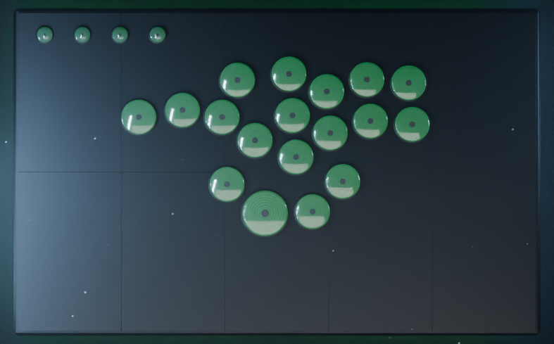
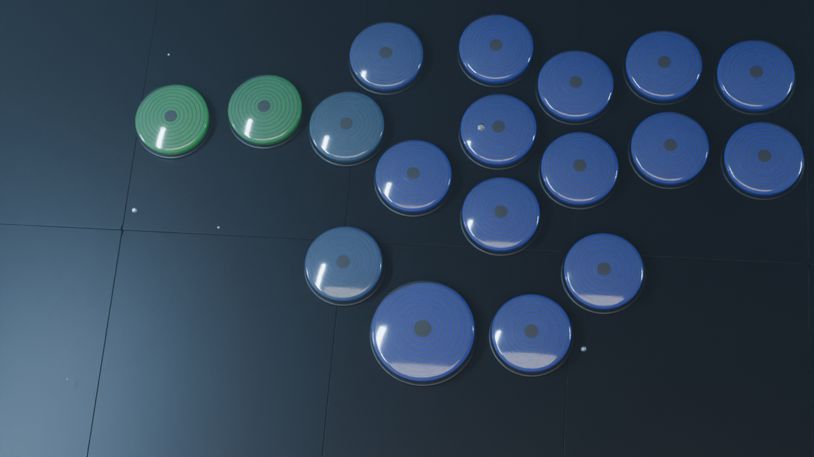

XORA / LEVERLESS TRANSFORMATION烟灰半透明弧面按键 · 蓝绿 Transform 灯效 · 机械变形
22 键 WebConfig 原布局 · 黑色阳极氧化铝合金板面 · 烟灰半透明键帽 · 内部同心圆 · 低亮度整面透光 · 底部 3 mm 整圈蓝绿扫色氛围灯 · 连续体积散射
320 × 172 · 12 FPS · 10 秒循环 · 本地三维渲染
上方为 640 × 344 视频预览，下方为设备 GIF 原始尺寸。全部文件保存在本地，未上传或写入设备。
屏幕原始尺寸
按键布局与材质 · 俯视细节

烟灰键帽 · 内部同心圆近景
